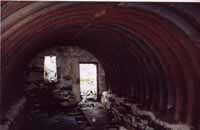

têtes N et S des Fours (2756 m)

Départ : parking des Murs (CD 902 - 1760 m)
Aller : 7,1 km, +1167 et - 171 m, 217 min
Retour : 5,6 km, - 996 m, 106 min
Difficulté : E
Période : mi juillet - septembre
Remarque : on peut aussi partir des Chapieux (200 m de plus). Un peu plus difficile, la tête S est beaucoup moins fréquentée.
Bibliographie : topo TMB, Mérel (p 166)
Suivre la route (interdite aux voitures) vers la Raja, puis le GR sur 100 m. Prendre à D vers le pylône ; à partir de là, le sentier est balisé de rouge. Il contourne le chalet du Petit Mt Blanc et rejoint au replat 2282 l’itinéraire AsF© 16.2 (lire page 115), qu’on suit jusqu’au cairn 2401. Par le GR, monter au col et au sommet.
Descendre par le GR, qui passe au refuge de la Croix du Bonhomme.
Description depuis le refuge : lire page 58.
Photo : le bivouac est possible dans l'abri souterrain militaire auprès du lac de Mya (toute la butte est pleine d'ouvrages militaires).